한국사능력검정시험-심화 (2022-12-03 기출문제)
1. (가) 시대의 생활 모습으로 옳은 것은? [1점]
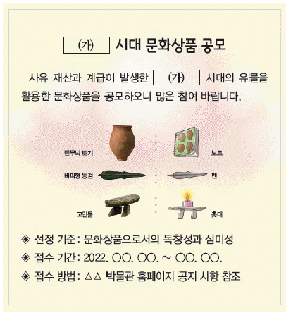
- 반달 돌칼로 벼를 수확하였다.
- 주로 동굴이나 막집에서 거주하였다.
- 소를 이용한 깊이갈이가 일반화되었다.
- 호미, 쇠스랑 등의 철제 농기구를 제작하였다.
- 가락바퀴와 뼈바늘을 이용하여 옷을 만들기 시작하였다.
(정답률: 81%)

2. (가)에 들어갈 내용으로 옳은 것은? [2점]
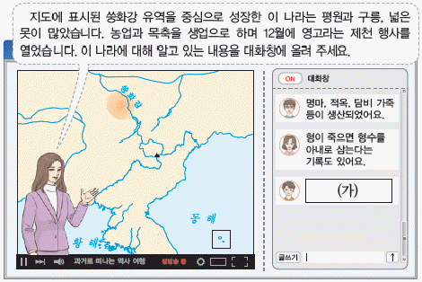
- 정사암에 모여 재상을 선출하였어요.
- 여러 가(加)가 별도로 사출도를 다스렸어요.
- 읍락 간의 경계를 중시하는 책화가 있었어요.
- 사회 질서를 유지하기 위해 범금 8조를 두었어요.
- 제사장인 천군과 신성 지역인 소도가 존재하였어요.
(정답률: 83%)
3. (가) 나라에 대한 설명으로 옳은 것은? [2점]
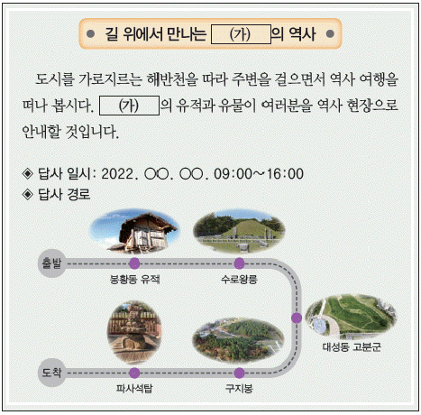
- 덩이쇠를 화폐처럼 사용하였다.
- 한 무제의 공격으로 멸망하였다.
- 혼인 풍속으로 민며느리제가 있었다.
- 골품에 따라 관등 승진에 제한이 있었다.
- 빈민을 구제하기 위해 진대법을 시행하였다.
(정답률: 74%)
4. 밑줄 그은 '왕'에 대한 설명으로 옳은 것은? [2점]
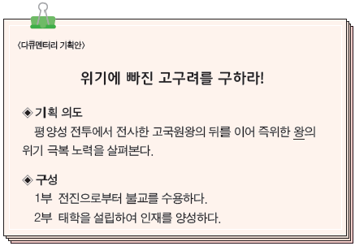
- 평양으로 수도를 옮겼다.
- 병부와 상대등을 설치하였다.
- 22담로에 왕족을 파견하였다.
- 고흥에게 서기를 편찬하게 하였다.
- 율령을 반포하여 통치 체제를 정비하였다.
(정답률: 83%)
5. 밑줄 그은 '이 탑'으로 옳은 것은? [3점]
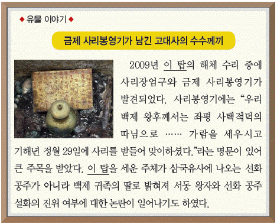
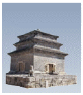
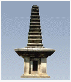
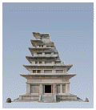
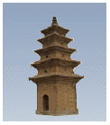
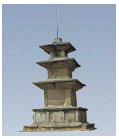
(정답률: 56%)
6. (가), (나) 사이의 시기에 있었던 사실로 옳은 것은? [3점]
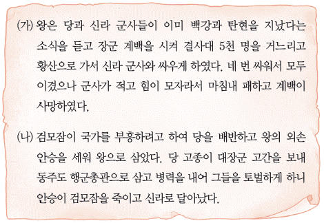
- 당이 안동도호부를 요동으로 옮겼다.
- 성왕이 관산성 전투에서 전사하였다.
- 신라군이 기벌포에서 당군을 격파하였다.
- 김춘추가 당과의 군사 동맹을 성사시켰다.
- 복신과 도침이 부여풍을 왕으로 추대하였다.
(정답률: 61%)
7. (가) 국가에 대한 설명으로 옳은 것은? [1점]
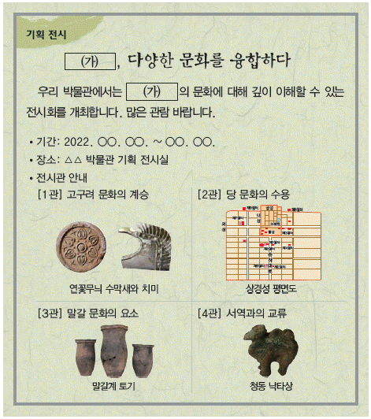
- 후당과 오월에 사신을 파견하였다.
- 주자감을 설치하여 인재를 양성하였다.
- 9서당과 10정의 군사 조직을 운영하였다.
- 화백 회의에서 국가의 중대사를 논의하였다.
- 내신좌평, 위사좌평 등 6좌평의 관제를 마련하였다.
(정답률: 70%)
8. (가)에 들어갈 내용으로 옳은 것은? [2점]
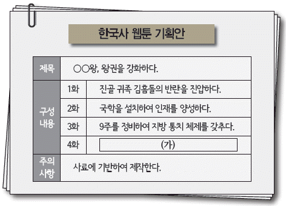
- 관료전을 지급하고 녹읍을 폐지하다.
- 마립간이라는 칭호를 처음 사용하다.
- 이사부를 보내 우산국을 복속시키다.
- 화랑도를 국가적 조직으로 개편하다.
- 이차돈의 순교를 계기로 불교를 공인하다.
(정답률: 73%)
9. 밑줄 그은 '이 인물'에 대한 설명으로 옳은 것은? [2점]
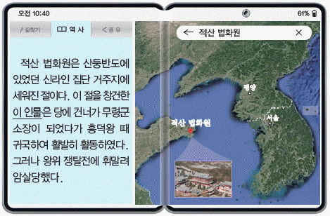
- 구법 순례기인 왕오천축국전을 지었다.
- 진성 여왕에게 시무책 10여 조를 올렸다.
- 청해진을 중심으로 해상 무역을 전개하였다.
- 9산 선문 중의 하나인 가지산문을 개창하였다.
- 한자의 음과 훈을 차용한 이두를 체계적으로 정리하였다.
(정답률: 68%)
10. 밑줄 그은 '왕'의 정책으로 옳은 것은? [2점]
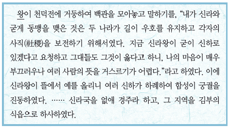
- 빈민 구제 기관인 흑창을 설치하였다.
- 12목을 설치하고 지방관을 파견하였다.
- 국자감에 7재라는 전문 강좌를 운영하였다.
- 광덕, 준풍 등의 독자적 연호를 사용하였다.
- 전시과 제도를 마련하여 관리에게 토지를 지급하였다.
(정답률: 61%)
11. (가)에 대한 역대 왕조의 대응으로 옳은 것은? [2점]
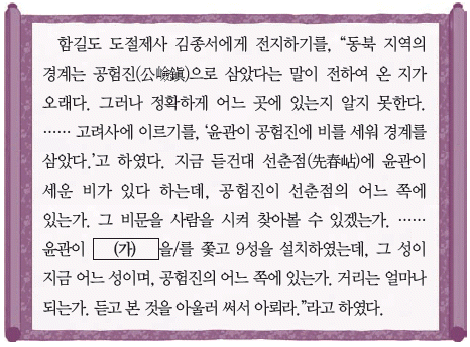
- 신라 문무왕 때 청방인문표를 보내어 인질의 석방을 요구하였다.
- 고려 우왕 때 나세, 심덕부 등이 진포에서 크게 물리쳤다.
- 고려 창왕 때 박위를 파견하여 근거지를 토벌하였다.
- 조선 태종 때 경성과 경원에 무역소를 설치하여 회유하였다.
- 조선 광해군 때 기유약조를 체결하여 무역을 재개하였다.
(정답률: 42%)
12. (가) 국가의 경제 상황으로 옳은 것은? [2점]
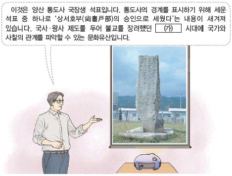
- 삼한통보, 해동통보 등이 발행되었다.
- 특산품으로 솔빈부의 말이 유명하였다.
- 만상이 대청 무역으로 부를 축적하였다.
- 시장을 감독하는 관청인 동시전이 설치되었다.
- 광산을 전문적으로 경영하는 덕대가 등장하였다.
(정답률: 50%)
13. (가) 국가의 문화유산으로 옳은 것을 ＜보기＞에서 고른 것은? [2점]
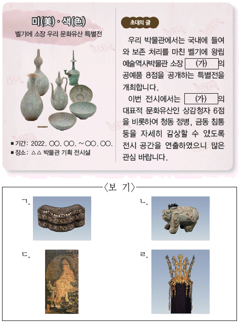
- ㄱ, ㄴ
- ㄱ, ㄷ
- ㄴ, ㄷ
- ㄴ, ㄹ
- ㄷ, ㄹ
(정답률: 52%)
14. (가) 시기에 있었던 사실로 옳은 것은? [2점]
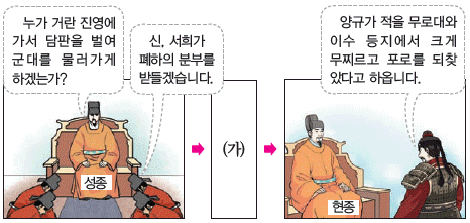
- 묘청이 서경에서 난을 일으켰다.
- 이자겸이 척준경에 의해 축출되었다.
- 강조가 정변을 일으켜 국왕을 폐위하였다.
- 김윤후가 처인성에서 살리타를 사살하였다.
- 다인철소의 주민들이 충주에서 항전하였다.
(정답률: 52%)
15. 다음 상황이 나타난 시기의 사회 모습으로 옳은 것은? [1점]
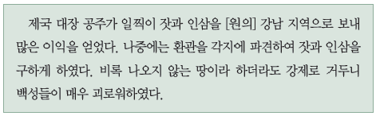
- 원종과 애노가 사벌주에서 봉기하였다.
- 대각국사 의천이 해동 천태종을 개창하였다.
- 지배층을 중심으로 변발과 호복이 유행하였다.
- 기근에 대비하기 위해 구황촬요가 간행되었다.
- 국난 극복을 기원하며 초조 대장경이 조판되었다.
(정답률: 65%)
16. 다음 사건의 배경으로 가장 적절한 것은? [2점]
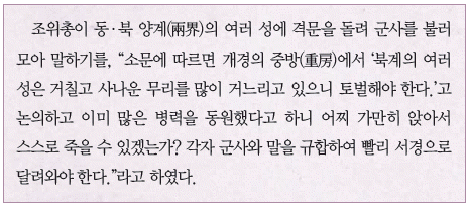
- 노비 만적이 반란을 모의하였다.
- 정중부, 이의방 등이 정변을 일으켰다.
- 신돈이 전민변정도감의 판사가 되었다.
- 망이, 망소이 등이 명학소에서 봉기하였다.
- 최충헌이 교정도감을 설치하여 국정을 총괄하였다.
(정답률: 45%)
17. (가) 군사 조직에 대한 설명으로 옳은 것은? [1점]
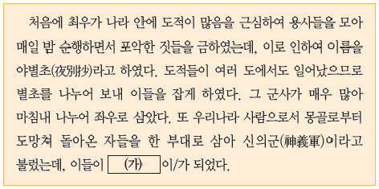
- 광군사의 통제를 받았다.
- 정미 7조약에 의해 해산되었다.
- 4군 6진을 개척해 영토를 확장하였다.
- 개경 환도 결정에 반발하여 항쟁하였다.
- 유사시에 향토 방위를 담당하는 예비군이었다.
(정답률: 55%)
18. 밑줄 그은 '그'에 대한 설명으로 옳은 것은? [3점]
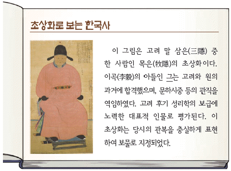
- 역옹패설과 사략을 저술하였다.
- 왕명에 의해 삼국사기를 편찬하였다.
- 문헌공도를 설립하여 유학 교육에 힘썼다.
- 불교 개혁을 주장하며 수선사 결사를 제창하였다.
- 성균관의 대사성이 되어 정몽주 등을 학관으로 천거하였다.
(정답률: 41%)
19. (가) 왕의 재위 시기에 있었던 사실로 옳은 것은? [2점]
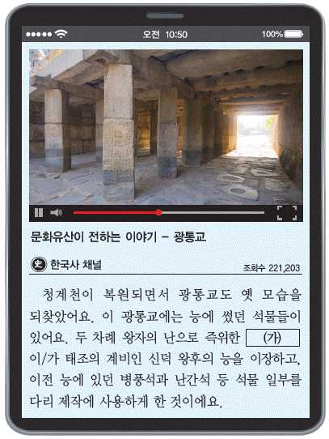
- 최무선의 건의로 화통도감이 설치되었다.
- 조선의 기본 법전인 경국대전이 완성되었다.
- 국방 문제를 논의하기 위한 비변사가 설치되었다.
- 세계 지도인 혼일강리역대국도지도가 제작되었다.
- 한양을 기준으로 한 역법서인 칠정산이 간행되었다.
(정답률: 54%)
20. 밑줄 그은 '이 기구'에 대한 설명으로 옳은 것은? [2점]
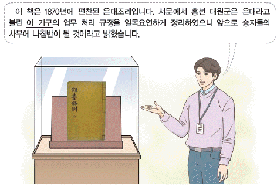
- 왕명의 출납을 관장하였다.
- 사간원, 사헌부와 함께 3사로 불렸다.
- 천문 연구, 기상 관측 등의 일을 맡았다.
- 실록을 보관하고 관리하는 업무를 담당하였다.
- 국왕 직속 사법 기구로 강상죄, 반역죄 등을 처결하였다.
(정답률: 46%)
21. 다음 검색창에 들어갈 인물의 활동으로 옳은 것은? [3점]
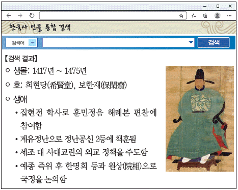
- 기해 예송에서 기년설을 주장하였다.
- 반정 공신의 위훈 삭제를 건의하였다.
- 향촌의 풍속 교화를 위해 예안 향약을 시행하였다.
- 최초로 100리 척을 사용한 동국지도를 제작하였다.
- 일본의 정치, 사회, 지리 등을 정리한 해동제국기를 저술하였다.
(정답률: 30%)
22. (가) 왕이 추진한 정책으로 옳은 것은? [3점]
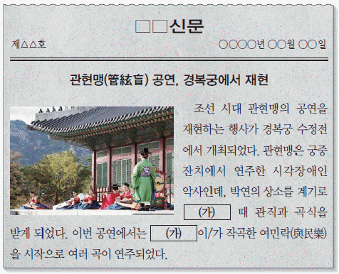
- 창덕궁에 신문고를 처음 설치하였다.
- 삼수병으로 구성된 훈련도감을 창설하였다.
- 붕당 정치의 폐단을 경계하고자 탕평비를 세웠다.
- 통치 체제를 정비하기 위해 대전통편을 간행하였다.
- 유교 윤리의 보급을 위해 삼강행실도를 편찬하였다.
(정답률: 45%)
23. 다음 상인이 등장한 배경으로 가장 적절한 것은? [1점]
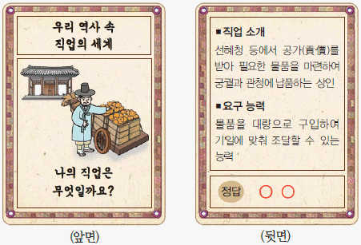
- 관수 관급제가 시행되었다.
- 금속 화폐인 건원중보가 주조되었다.
- 근대적 상회사인 대동 상회가 설립되었다.
- 공납의 폐단을 시정하기 위해 대동법이 실시되었다.
- 육의전을 제외한 시전 상인의 금난전권이 폐지되었다.
(정답률: 54%)
24. 밑줄 그은 '이 성곽'에 대한 설명으로 옳지 않은 것은? [2점]
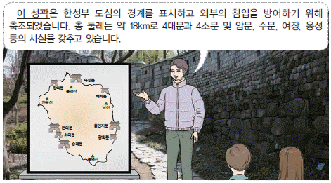
- 개국 초기 정도전 등이 설계하였다.
- 도성조축도감이 축조를 관장하였다.
- 후금의 침입에 맞서 정봉수가 항전한 곳이다.
- 조선 시대 축성 기술의 변화 과정이 잘 나타나 있다.
- 일제 강점기 도시 정비 계획을 구실로 크게 훼손되었다.
(정답률: 45%)
25. 다음 전투 이후에 전개된 사실로 옳은 것은? [2점]
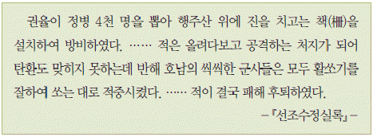
- 최영이 홍산에서 대승을 거두었다.
- 이순신이 한산도 대첩에서 승리하였다.
- 휴전 회담의 결렬로 정유재란이 시작되었다.
- 이종무가 왜구의 근거지인 쓰시마를 정벌하였다.
- 신립이 탄금대에서 배수의 진을 치고 왜군에 항전하였다.
(정답률: 43%)
26. 밑줄 그은 '임금'의 재위 기간에 있었던 사실로 옳은 것은? [3점]
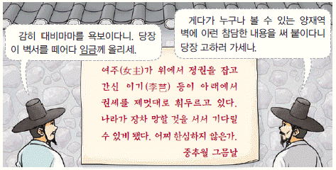
- 사림이 동인과 서인으로 나뉘었다.
- 외척 간의 대립으로 을사사화가 일어났다.
- 서인이 반정을 일으켜 정권을 장악하였다.
- 김종직 등 사림이 중앙 정계에 진출하기 시작하였다.
- 폐비 윤씨 사사 사건의 전말이 알려져 김굉필 등이 처형되었다.
(정답률: 36%)
27. (가) 문화유산에 대한 설명으로 옳은 것을 ＜보기＞에서 고른 것은? [2점]
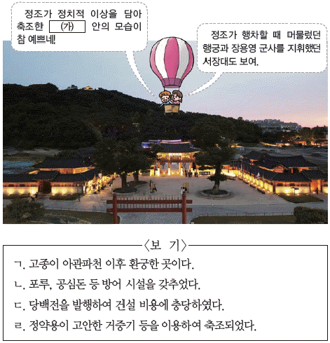
- ㄱ, ㄴ
- ㄱ, ㄷ
- ㄴ, ㄷ
- ㄴ, ㄹ
- ㄷ, ㄹ
(정답률: 56%)
28. (가), (나)를 쓴 인물의 공통점으로 옳은 것은? [2점]
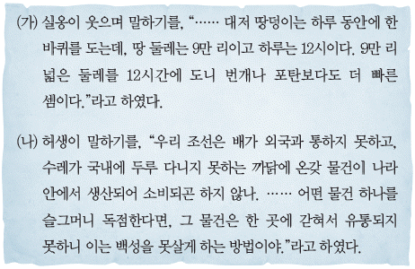
- 갑술환국으로 정계에서 축출되었다.
- 양명학을 연구하여 강화학파를 형성하였다.
- 서얼 출신으로 규장각 검서관에 기용되었다.
- 연행사의 일원으로 청에 다녀와 연행록을 남겼다.
- 농민 생활의 안정을 위하여 화폐 사용을 반대하였다.
(정답률: 33%)
29. 밑줄 그은 '시기'에 볼 수 있는 모습으로 옳지 않은 것은? [1점]
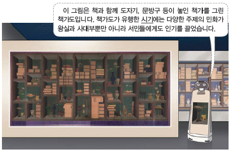
- 판소리를 구경하는 농민
- 탈춤 공연을 벌이는 광대
- 장시에서 물품을 파는 보부상
- 한글 소설을 읽어주는 전기수
- 벽란도에서 인삼을 사는 송의 상인
(정답률: 64%)
30. 밑줄 그은 '이 사건'이 일어난 시기를 연표에서 옳게 고른 것은? [2점]
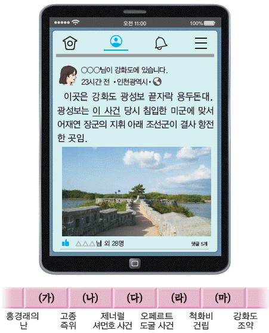
- (가)
- (나)
- (다)
- (라)
- (마)
(정답률: 49%)
31. 밑줄 그은 '개혁'에 해당하는 내용으로 옳은 것은? [2점]
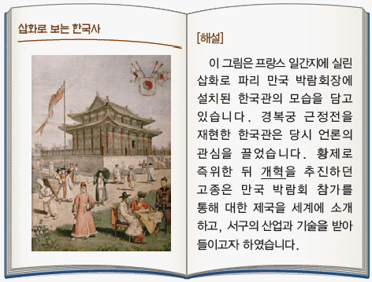
- 건양이라는 연호를 사용하였다.
- 신식 군대인 별기군을 창설하였다.
- 관립 의학교와 광제원을 설립하였다.
- 박문국을 설치하여 한성순보를 발간하였다.
- 한일 관계 사료집을 편찬하고 독립 공채를 발행하였다.
(정답률: 27%)
32. (가)에 들어갈 내용으로 옳은 것은? [2점]
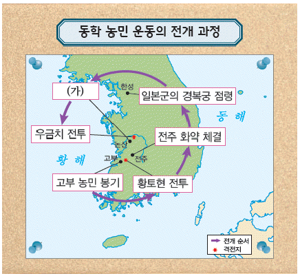
- 교정청 설치
- 전봉준 체포
- 13도 창의군 결성
- 안핵사 이용태 파견
- 남접과 북접의 연합
(정답률: 46%)
33. 밑줄 그은 '조약'의 영향으로 가장 적절한 것은? [2점]
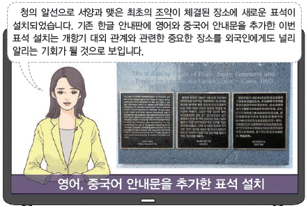
- 부산, 원산, 인천 항구가 개항되었다.
- 김홍집이 국내에 조선책략을 소개하였다.
- 민영익을 대표로 한 보빙사가 파견되었다.
- 일본 군함 운요호가 영종도를 공격하였다.
- 개화 정책을 총괄하는 통리기무아문이 설치되었다.
(정답률: 41%)
34. 교사의 질문에 대한 학생의 답변으로 옳은 것은? [2점]
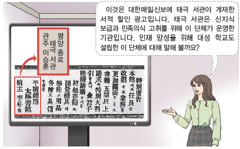
- 민립 대학 설립 운동을 전개하였어요.
- 러시아의 절영도 조차 요구를 저지하였어요.
- 파리 강화 회의에 독립 청원서를 제출하였어요.
- 안창호, 양기탁 등이 비밀 결사로 조직하였어요.
- 국문 연구소를 세워 한글의 문자 체계를 정리하였어요.
(정답률: 52%)
35. 다음 인물의 활동으로 옳은 것은? [3점]
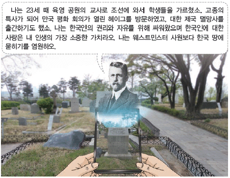
- 화폐 정리 사업을 주도하였다.
- 한글로 된 교재인 사민필지를 집필하였다.
- 여성 교육 기관인 이화 학당을 설립하였다.
- 친일 인사 스티븐스를 샌프란시스코에서 사살하였다.
- 논설 단연보국채를 써서 국채 보상 운동에 적극 참여하였다.
(정답률: 34%)
36. (가) 단체의 활동으로 옳은 것은? [2점]
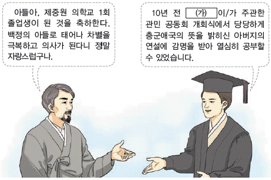
- 일제의 황무지 개간권 요구를 저지하였다.
- 중추원 개편을 통한 의회 설립을 추진하였다.
- 농촌 계몽을 위한 브나로드 운동을 전개하였다.
- 외교 활동을 펼치기 위해 구미 위원부를 설치하였다.
- 여성의 평등한 권리를 주장하는 여권통문을 발표하였다.
(정답률: 44%)
37. (가), (나) 사이의 시기에 있었던 사실로 옳은 것은? [2점]
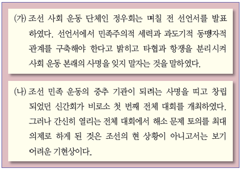
- 광주 학생 항일 운동이 일어났다.
- 임병찬이 독립 의군부를 조직하였다.
- 독립군이 봉오동에서 큰 승리를 거두었다.
- 도쿄 유학생들이 2·8 독립 선언서를 발표하였다.
- 조선 민족 전선 연맹 산하에 조선 의용대가 창설되었다.
(정답률: 42%)
38. 밑줄 그은 '이곳'에 해당하는 지역을 지도에서 옳게 고른 것은? [1점]
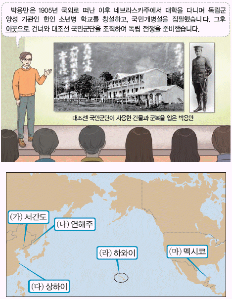
- (가)
- (나)
- (다)
- (라)
- (마)
(정답률: 44%)
39. (가), (나) 인물에 대한 설명으로 옳은 것은? [3점]
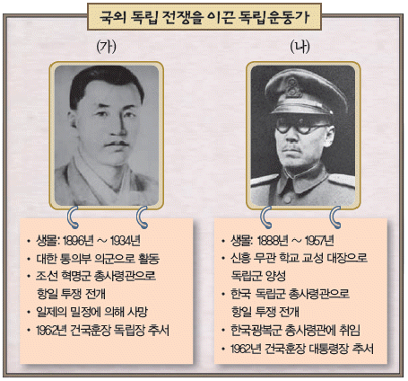
- (가) - 조선 혁명 간부 학교를 설립하였다.
- (가) - 대한 광복회를 조직하여 친일파를 처단하였다.
- (나) - 대전자령 전투에서 일본군에 대승을 거두었다.
- (나) - 중광단을 중심으로 북로 군정서를 조직하였다.
- (가), (나) - 황푸 군관 학교에 입학하여 군사 훈련을 받았다.
(정답률: 39%)
40. 밑줄 그은 '시기'의 일제 정책으로 옳은 것은? [1점]
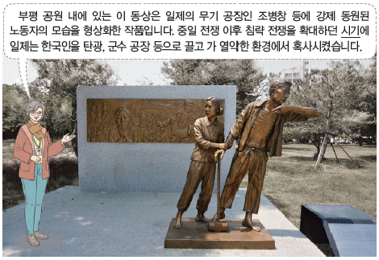
- 치안 유지법을 공포하였다.
- 토지 조사령을 제정하였다.
- 헌병 경찰 제도를 실시하였다.
- 식량 배급 및 미곡 공출제를 시행하였다.
- 보통학교의 수업 연한을 4년으로 정하였다.
(정답률: 51%)
41. (가) 정부에 대한 설명으로 옳은 것은? [2점]
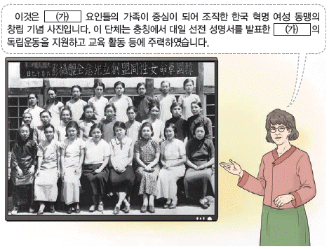
- 좌우 합작 7원칙을 발표하였다.
- 한인 자치 기관인 경학사를 조직하였다.
- 조선 혁명 선언을 활동 지침으로 삼았다.
- 한글 맞춤법 통일안과 표준어를 제정하였다.
- 삼균주의를 기초로 한 건국 강령을 선포하였다.
(정답률: 36%)
42. (가) 사건에 대한 설명으로 옳은 것은? [2점]
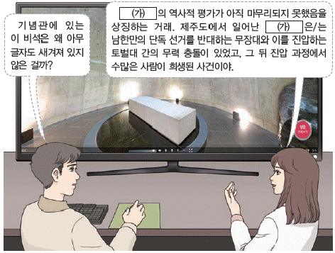
- 유신 헌법의 철폐를 요구하였다.
- 통일 주체 국민 회의가 설치되는 결과를 가져왔다.
- 희생자들의 명예 회복을 위한 특별법이 제정되었다.
- 4·13 호헌 철폐와 독재 타도 등의 구호를 내세웠다.
- 귀속 재산 처리를 위한 신한 공사 설립의 계기가 되었다.
(정답률: 54%)
43. (가) 전쟁 중 있었던 사실로 옳은 것은? [1점]
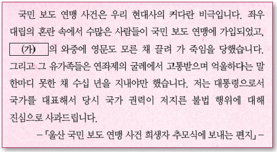
- 6·3 시위가 발생하였다.
- 애치슨 선언이 발표되었다.
- 브라운 각서가 체결되었다.
- 부마 민주 항쟁이 일어났다.
- 인천 상륙 작전이 전개되었다.
(정답률: 48%)
44. 밑줄 그은 '개헌안'이 발표된 이후의 사실로 옳은 것은? [3점]
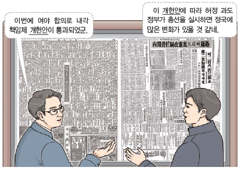
- 반민족 행위 처벌법이 제정되었다.
- 제2차 미소 공동 위원회가 결렬되었다.
- 국회가 민의원과 참의원의 양원제로 운영되었다.
- 평화 통일론을 주장한 진보당의 조봉암이 구속되었다.
- 유상 매수, 유상 분배 원칙의 농지 개혁법이 제정되었다.
(정답률: 47%)
45. 다음 정부 시기에 볼 수 있는 모습으로 가장 적절한 것은? [2점]
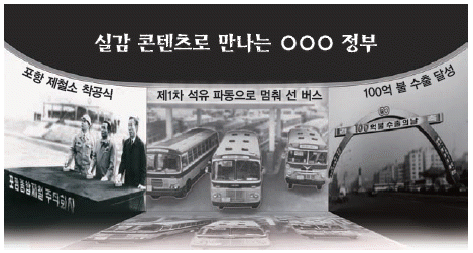
- 최저 임금법 제정으로 최저 임금을 심의하는 위원
- 금융 실명제에 따라 신분증 제시를 요구하는 은행원
- 한·칠레 자유 무역 협정(FTA)의 비준을 보도하는 기자
- 전국 민주 노동조합 총연맹 창립 대회에 참가하는 노동자
- 정부의 도시 정책에 반발해 시위를 하는 광주 대단지 이주민
(정답률: 40%)
46. (가) 민주화 운동에 대한 설명으로 옳은 것은? [1점]
- 시위 도중 대학생 이한열이 희생되었다.
- 경무대로 향하던 시위대가 경찰의 총격을 받았다.
- 박종철 고문 치사 사건의 진상 규명을 요구하였다.
- 신군부의 비상계엄 확대와 무력 진압에 저항하였다.
- 3·1 민주 구국 선언을 통해 긴급 조치 철폐 등을 주장하였다.
(정답률: 48%)
47. (가), (나) 사이의 시기에 있었던 사실로 옳은 것은? [2점]
- 남북 조절 위원회가 구성되었다.
- 7·4 남북 공동 성명이 발표되었다.
- 개성 공업 지구 건설이 착공되었다.
- 남북한 비핵화 공동 선언이 채택되었다.
- 남북 이산가족 고향 방문단의 교환 방문이 최초로 성사되었다.
(정답률: 34%)
48. (가) 문화유산에 대한 설명으로 옳은 것을 ＜보기＞에서 고른 것은? [2점]
- ㄱ, ㄴ
- ㄱ, ㄷ
- ㄴ, ㄷ
- ㄴ, ㄹ
- ㄷ, ㄹ
(정답률: 28%)
49. 밑줄 그은 ㉠, ㉡에 대한 설명으로 옳은 것은? [3점](49번 공통지문 문제)
- ㉠ - 역분전이 제정되는 결과를 가져왔다.
- ㉠ - 지공거와 합격자 사이에 좌주와 문생 관계가 형성되었다.
- ㉡ - 제술과, 명경과, 잡과, 승과로 구성되었다.
- ㉡ - 성균관에서 보는 관시, 한성부에서 보는 한성시, 각 지방에서 보는 향시로 나뉘었다.
- ㉠, ㉡ - 홍범 14조 반포를 계기로 시행되었다.
(정답률: 30%)